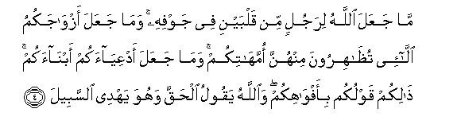
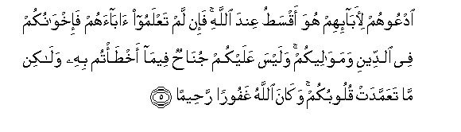
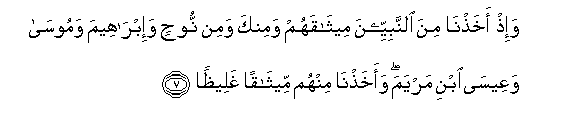

Sacred Texts Islam Index
Hypertext Qur'an Unicode Palmer Pickthall Yusuf Ali English Rodwell
Sūra XXXIII.: Aḥzāb, or The Confederates. Index
Previous Next

The Holy Quran, tr. by Yusuf Ali, [1934], at sacred-texts.com
Sūra XXXIII.: Aḥzāb, or The Confederates.
Section 1
1. Ya ayyuha alnnabiyyu ittaqi Allaha wala tutiAAi alkafireena waalmunafiqeena inna Allaha kana AAaleeman hakeeman
1. O Prophet! Fear God,
And hearken not
To the Unbelievers
And the Hypocrites:
Verily god is full
Of knowledge and wisdom.
2. WaittabiAA ma yooha ilayka min rabbika inna Allaha kana bima taAAmaloona khabeeran
2. But follow that which
Comes to thee by inspiration
From thy Lord: for God
Is well acquainted
With (all) that ye do.
3. Watawakkal AAala Allahi wakafa biAllahi wakeelan
3. And put thy trust
In God, and enough is God
As a Disposer of affairs.

4. Ma jaAAala Allahu lirajulin min qalbayni fee jawfihi wama jaAAala azwajakumu alla-ee tuthahiroona minhunna ommahatikum wama jaAAala adAAiyaakum abnaakum thalikum qawlukum bi-afwahikum waAllahu yaqoolu alhaqqa wahuwa yahdee alssabeela
4. God has not made
For any man two hearts
In his (one) body: nor has
He made your wives whom
Ye divorce by Ẓihār
Your mothers: nor has He
Made your adopted sons
Your sons. Such is (only)
Your (manner of) speech
By your mouths. but God
Tells (you) the Truth, and He
Shows the (right) Way.

5. OdAAoohum li-aba-ihim huwa aqsatu AAinda Allahi fa-in lam taAAlamoo abaahum fa-ikhwanukum fee alddeeni wamawaleekum walaysa AAalaykum junahun feema akhta/tum bihi walakin ma taAAammadat quloobukum wakana Allahu ghafooran raheeman
5. Call them by (the names
Of) their fathers: that is
Juster in the sight of God.
But if ye know not
Their father's (names, call
Them) your Brothers in faith,
Or your Maulās.
But there is no blame
On you if ye make
A mistake therein:
(What counts is)
The intention of your hearts:
And god is Oft-Returning,
Most Merciful.
6. Alnnabiyyu awla bialmu/mineena min anfusihim waazwajuhu ommahatuhum waoloo al-arhami baAAduhum awla bibaAAdin fee kitabi Allahi mina almu/mineena waalmuhajireena illa an tafAAaloo ila awliya-ikum maAAroofan kana thalika fee alkitabi mastooran
6. The Prophet is closer
To the Believers than
Their own selves,
And his wives are
Their mothers. Blood-relations
Among each other have
Closer personal ties,
In the Decree of God.
Than (the Brotherhood of)
Believers and Muhājirs:
Nevertheless do ye
What is just to your
Closest friends: such is
The writing in the Decree
(Of God).

7. Wa-ith akhathna mina alnnabiyyeena meethaqahum waminka wamin noohin wa-ibraheema wamoosa waAAeesa ibni maryama waakhathna minhum meethaqan ghaleethan
7. And remember We took
From the Prophets their
Covenant:
As (We did) from thee:
From Noah, Abraham, Moses,
And Jesus the son of Mary:
We took from them
A solemn Covenant:
8. Liyas-ala alssadiqeena AAan sidqihim waaAAadda lilkafireena AAathaban aleeman
8. That (God) may question
The (Custodians) of Truth concerning
The Truth they (were charged with):
And He has prepared
For the Unbelievers
A grievous Penalty.